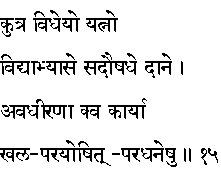
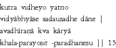

|

|
Verse 15 - Meaning:
Q: What should one strive to achieve in life ? (kutra vidheyo yatno)
A: To get good education, good medication and the habit of making gifts. (vidya-abhyase, sad-aushadhe and daane respectively)
Q: What activities should one resist from doing ? (avadhirana kva karya)
A: Association or indulgence with the unscrupulous, others' women and others' wealth. (khala, para-yosit and para-dhana respectively)
|